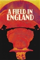

Total of 34 Movies
During the Civil War in 17th-Century England, a small group of deserters flee from a raging battle through an overgrown field. They are captured by an alchemist, who forces the group to aid him in his search to find a hidden treasure that he believes is buried in the field. Crossing a vast mushroom circle, which provides their first meal, the group quickly descend into a chaos of arguments, fighting and paranoia, and, as it becomes clear that the treasure might be something other than gold, they slowly become victim to the terrifying energies trapped inside the field.
On a golden afternoon, young Alice follows a White Rabbit, who disappears down a nearby rabbit hole. Quickly following him, she tumbles into the burrow - and enters the merry, topsy-turvy world of Wonderland! Memorable songs and whimsical escapades highlight Alice's journey, which culminates in a madcap encounter with the Queen of Hearts - and her army of playing cards!
A young man who was sentenced to 7 years in prison for robbing a post office ends up spending 30 years in solitary confinement. During this time, his own personality is supplanted by his alter ego, Charles Bronson.
A main claiming to be from the future explains what we can expect from the next decades, in a frightening glimpse of what's to come.
The year is 2071. Following a terrorist bombing, a deadly virus is released on the populace of Mars and the government has issued the largest bounty in history, for the capture of whoever is behind it. The bounty hunter crew of the spaceship Bebop; Spike, Faye, Jet and Ed, take the case with hopes of cashing in the bounty. However, the mystery surrounding the man responsible, Vincent, goes deeper than they ever imagined, and they aren't the only ones hunting him.
Helen tries to cope with the recent death of her husband, a scientist who killed himself right when he was on the verge of successfully completing the invention of a time machine. One day, she receives a phone call, and a voice suspiciously resembling her own voice warns her that she’s in danger. Is it possible Helen has time travelled? And what could have led her to do something like that?
Four African-American Vietnam veterans return to Vietnam. They are in search of the remains of their fallen squad leader and the promise of buried treasure. These heroes battle forces of humanity and nature while confronted by the lasting ravages of the immorality of the Vietnam War.
A rich woman and a calculating insurance agent plot to kill her unsuspecting husband after he signs a double indemnity policy. Against a backdrop of distinctly Californian settings, the partners in crime plan the perfect murder to collect the insurance, which pays double if the death is accidental.
Paul Atreides, a brilliant and gifted young man born into a great destiny beyond his understanding, must travel to the most dangerous planet in the universe to ensure the future of his family and his people. As malevolent forces explode into conflict over the planet's exclusive supply of the most precious resource in existence-a commodity capable of unlocking humanity's greatest potential-only those who can conquer their fear will survive.
Walt Disney's timeless masterpiece is an extravaganza of sight and sound! See the music come to life, hear the pictures burst into song and experience the excitement that is Fantasia over and over again.
Jerry, a small-town Minnesota car salesman is bursting at the seams with debt... but he's got a plan. He's going to hire two thugs to kidnap his wife in a scheme to collect a hefty ransom from his wealthy father-in-law. It's going to be a snap and nobody's going to get hurt... until people start dying. Enter Police Chief Marge, a coffee-drinking, parka-wearing - and extremely pregnant - investigator who'll stop at nothing to get her man. And if you think her small-time investigative skills will give the crooks a run for their ransom... you betcha!
An assassin is shot by her ruthless employer, Bill, and other members of their assassination circle – but she lives to plot her vengeance.
The Bride unwaveringly continues on her roaring rampage of revenge against the band of assassins who had tried to kill her and her unborn child. She visits each of her former associates one-by-one, checking off the victims on her Death List Five until there's nothing left to do … but kill Bill.
When the aging Meyer Lansky is investigated one last time by the Feds who suspect he has stashed away millions of dollars over half a century, the retired gangster spins a dizzying tale, revealing the untold truth about his life as the notorious boss of Murder Inc. and the National Crime Syndicate.
A card shark and his unwillingly-enlisted friends need to make a lot of cash quick after losing a sketchy poker match. To do this they decide to pull a heist on a small-time gang who happen to be operating out of the flat next door.
Two sisters move to the country with their father in order to be closer to their hospitalized mother, and discover the surrounding trees are inhabited by Totoros, magical spirits of the forest. When the youngest runs away from home, the older sister seeks help from the spirits to find her.
In 1960, a team of Israeli secret agents is deployed to find Adolf Eichmann, the infamous Nazi architect of the Holocaust, supposedly hidden in Argentina, and get him to Israel to be judged.
A commanding officer defends three scapegoats on trial for a failed offensive that occurred within the French Army in 1916.
Lonely toymaker Geppetto has his wishes answered when the Blue Fairy arrives to bring his wooden puppet Pinocchio to life. Before becoming a real boy, however, Pinocchio must prove he's worthy as he sets off on an adventure with his whistling sidekick and conscience, Jiminy Cricket.
A botched robbery indicates a police informant, and the pressure mounts in the aftermath at a warehouse. Crime begets violence as the survivors -- veteran Mr. White, newcomer Mr. Orange, psychopathic parolee Mr. Blonde, bickering weasel Mr. Pink and Nice Guy Eddie -- unravel.
Nell, Simon, and their boy Art are ready to welcome friends and family for what promises to be a perfect Christmas gathering. Perfect except for one thing: everyone is going to die.
A beautiful princess born in a faraway kingdom is destined by a terrible curse to prick her finger on the spindle of a spinning wheel and fall into a deep sleep that can only be awakened by true love's first kiss. Determined to protect her, her parents ask three fairies to raise her in hiding. But the evil Maleficent is just as determined to seal the princess's fate.
Taran is an assistant pigkeeper with boyish dreams of becoming a great warrior. However, he has to put the daydreaming aside when his charge, an oracular pig named Hen Wen, is kidnapped by an evil lord known as the Horned King. The villain hopes Hen will show him the way to The Black Cauldron, which has the power to create a giant army of unstoppable soldiers.
Two brothers return to the cult they fled from years ago to discover that the group's beliefs may be more sane than they once thought.
American expat Mickey Pearson has built a highly profitable marijuana empire in London. When word gets out that he’s looking to cash out of the business forever it triggers plots, schemes, bribery and blackmail in an attempt to steal his domain out from under him.
In New York, former convict Pete Koslow, related to the Polish mafia, must deal with both Klimek the General, his ruthless boss, and the twisted ambitions of two federal agents, as he tries to survive and protect the lives of his loved ones.
This colorful adventure tells the story of an impetuous mermaid princess named Ariel who falls in love with the very human Prince Eric and puts everything on the line for the chance to be with him. Memorable songs and characters -- including the villainous sea witch Ursula.
Set in the 22nd century, The Matrix tells the story of a computer hacker who joins a group of underground insurgents fighting the vast and powerful computers who now rule the earth.
Leonard is an English tailor who used to craft suits on London’s world-famous Savile Row. After a personal tragedy, he’s ended up in Chicago, operating a small tailor shop in a rough part of town where he makes beautiful clothes for the only people around who can afford them: a family of vicious gangsters.
In a pastoral Italian village, a young Londoner scientist helping his father with physics experiments, has to face the consequences of choices he hasn't made yet.

In a pastoral Italian village, a young Londoner scientist helping his father with physics experiments, has to face the consequences of choices he hasn't made yet.
A group of students become trapped inside a mysterious cave where they discover time passes differently underground than on the surface.
The Vietnam War and the helicopter, the two go hand in hand. The story of how the helicopter revolutionised how war was carried out and the enduring images of the conflict in Vietnam.
A chronicle of the decade-long hunt for al-Qaeda terrorist leader Osama bin Laden after the September 2001 attacks, and his death at the hands of the Navy S.E.A.L. Team 6 in May, 2011.
Total of 26 TV Shows
An exploration of the AK-47 from the perspectives of military historians, former reconnaissance personnel and key historic battles.
Summer 1945. An iron curtain comes down, separating the Communist Eastern bloc and the West, led by the Americans. And nuclear weapons leaves mankind under perpetual threat of a new Apocalypse.
A detailed history of key Vietnam War battles, from 1954 to 1975 in 12,1 hour episodes. Each episode focus' on a battle or a series of linked events from the Indochina War with the French to the final fall of Saigon.
In a distant part of the universe, a civilization of humans live on planets known as the Twelve Colonies. In the past, the Colonies have been at war with a cybernetic race known as the Cylons. 40 years after the first war the Cylons launch a devastating attack on the Colonies. The only military ship that survived the attack takes up the task of leading a small fugitive fleet of survivors into space in search of a fabled refuge known as Earth.
The murder of a young boy in a small coastal town brings a media frenzy, which threatens to tear the community apart.
In the year 2071 humanity has colonized the entire Solar System through the use of "Phase Difference Space Gates". A catastrophic accident occurred during the development of the Gates, damaging both the Earth and the Moon, heavily irradiating the surface, and forcing most of mankind to evacuate to other planets of the Solar System. Wherever humanity goes, so goes its criminal element, and thus the need for those who hunt criminals. The newly formed solar system police reinstated the bounty scheme of the Wild West. Cowboy Bebop is the story of the four inhabitants of the spaceship Bebop, and the living they barely make at bounty hunting.
Various chronicles of deception, intrigue and murder in and around frozen Minnesota. Yet all of these tales mysteriously lead back one way or another to Fargo, North Dakota.
Seven noble families fight for control of the mythical land of Westeros. Friction between the houses leads to full-scale war. All while a very ancient evil awakens in the farthest north. Amidst the war, a neglected military order of misfits, the Night's Watch, is all that stands between the realms of men and the icy horrors beyond.
"Great Planes" was a subset of "Wings" episodes which focused on one particular aircraft type. The original "Great Planes" series was initially produced by Aviation Video International in Australia, and distributed by the Discovery Channel. When it initially aired in America, the majority of episodes were narrated by the series' Australian writer and director, Luke Swann, with some others written and narrated by John Honey. In 1991 (notably following the first Gulf War), episodes were re-edited to include interviews with pilots of the profiled aircraft types before and following commercial breaks, and the narration was re-dubbed with American narrators Ron David and Tom Hair.
From the precision weapons of modern war to the aerial ballet of a dogfight, the gun camera has been a tool of reconnaissance and tactics since the dawn of flight and mechanized warfare. Climb into the cockpit as gun camera footage from nearly a century of war is analyzed, sometimes down to the frame, by a team of experts and the men who lived it.
One of the most bitter battle arenas of the Second World War, Pearl Harbor represented the trigger that led America into the greatest conflict ever recorded and the eventual liberation of the people of Asia and the Pacific. On the 7th December 1941 Japan launched surprise attacks across the Pacific region, setting battleships ablaze in Pearl Harbor, then routing the British in Malaya and capturing Singapore itself: the greatest humiliation in British war history. The Japanese now seemed unstoppable and after being at war with China for a decade, and shocking the world with atrocities like the Nanking Massacre, they believed their destiny was to rule Asia under the Emperor, for them, a living god.
The story of House Targaryen, 200 years before the events of Game of Thrones.
The show returns to Givens’ story eight years after he’s left Kentucky and he is now based in Miami, balancing life as a Marshal and part-time father of a 14-year-old girl. A chance encounter on a Florida highway sends him to Detroit and he crosses paths with Clement Mansell, aka The Oklahoma Wildman, a violent sociopath who’s already slipped through the fingers of Detroit’s finest once and wants to do so again
A detective chief inspector from 2006 is investigating a serial killer when he is knocked over by a speeding car. Waking up, he finds himself mysteriously transported back in time to 1973. Initially struggling to come to terms with his situation, he has to come to terms with the old-fashioned technology and attitude of the day, while figuring out how he came to be trapped in the past.
A gangster family epic set in 1919 Birmingham, England and centered on a gang who sew razor blades in the peaks of their caps, and their fierce boss Tommy Shelby, who means to move up in the world.
The dramatised account of how the world’s greatest Special Forces unit, the SAS, was formed under extraordinary circumstances in the darkest days of World War Two.
Set against the stark backdrop of Scotland's rugged coastline, DI Jimmy Perez and his team investigate murders in the small island community of Shetland.
Spartacus, the gladiator who lead a rebellion against the Romans. From his time as an ally of the Romans, to his betrayal and becoming a gladiator, to the rebellion he leads and its ultimate outcome.
Cormoran Strike, a war veteran turned private detective operating out of a tiny office in London’s Denmark Street, is wounded both physically and psychologically. His unique insight and his background as an SIB Investigator prove crucial in solving three complex cases, which have eluded the police.
A drama about a dysfunctional media family dynasty in the 21st century. The Roy family – Logan Roy and his four children – controls one of the biggest media and entertainment conglomerates in the world. "Succession" tracks their lives as they contemplate what the future will hold for them once their aging father begins to step back from the company.
Welcome to the world where military geeks, genius mechanics and eccentric millionaires are living the dream with blowtorches, industrial lathes and hi-tech electronics, restoring four notable battle tanks from WWII. Each episode follows one tank's story: the rebuild; the innovations that made each machine great, and the engineering flaws that proved fatal. Unique serial numbers lead us to re-trace each tank's forged-in-war history: discovering where it was made, the battles it fought and the often tragic end of its fighting career.
A mockumentary on a group of typical office workers, where the workday consists of ego clashes, inappropriate behavior, and tedium.
With access to both German and British archives, military historian Peter Barton re-examines one of the bloodiest battles of the First World War from both sides of No Man's Land.
While attending an online forensic course, young lab assistant discovers that the fictitious case study has a link to her past. With a help of two female professors she works on bringing a killer to justice.
DCI Cassie Stuart and DI Sunny Khan work together to solve cold cases involving historic disappearances and murders. When the bones of a young man are found beneath the footings of a demolished house, an investigation begins that will unravel the lives of four people who have been waiting for this moment for nearly forty years, as they discover that the past can’t – and won’t – stay buried forever.
DCI Vera Stanhope is obsessive about her work. With her caustic wit and guile, the unorthodox but brilliant detective investigates chilling crimes set in Northumberland with her trusted colleagues.